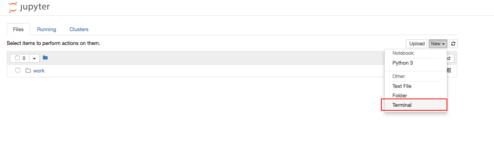
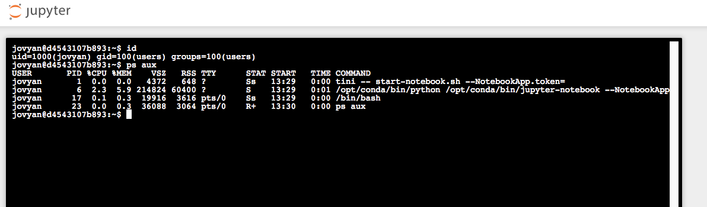

Jupyter Notebook Unauthorized Access¶
The Jupyter Notebook (previous IPython notebook) is a web-based interactive computing platform.
If the administrator doesn't configure a password for Jupyter Notebook, this will lead to an unauthorized access vulnerability where attackers can create a console and execute arbitrary Python code and commands.
Vulnerable environment¶
Execute following command to start a Jupyter Notebook server:
docker compose up -d
After the server is started, you can see the index of Jupyter Notebook on http://your-ip:8888.
Vulnerability Reproduce¶
Click "New" -> "Terminal" to create a console:

Execute arbitrary commands in this console:
